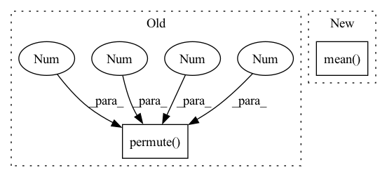

Pattern ID :1953

Before Change
// [N, K, M, H, W], [N, M, H, W]
contextLoss = F.cross_entropy(predict, c1)
// [n, m, h, w, k] -> [n, k, m, h, w]
l1, l2 = l1.permute(0, 4, 1, 2, 3), l2.permute(0, 4, 1, 2, 3)
// [N, K, M, H, W], [N, M, H, W]
// sum(-logP) / ()
bppLoss = (F.cross_entropy(l1, c1, reduction="mean") + F.cross_entropy(l2, c2, reduction="mean")) / math.log(2)
After Change
// sum(-logP) / ()
// bppLoss = (F.cross_entropy(l1, c1, reduction="mean") + F.cross_entropy(l2, c2, reduction="mean")) / math.log(2)
l1 = l1.mean((2,3))
l2 = l2.mean((2,3))
posterior1 = torch.distributions.Categorical(logits=l1)
posterior2 = torch.distributions.Categorical(logits=l2)
In pattern: SUPERPATTERN
Frequency: 4
Non-data size: 2
Instances
Fragment ID: 7293695
Project Name: xiaosu-zhu/mcquic
Commit Name: 3bc9fe6e9c9c8b767c920dcc9da256ef2c9749ef
Time: 2021-09-12
Author: xiaosu.zhu@outlook.com
File Name: src/mcqc/losses/quantization.py
M Class Name: CompressionLossBig
N Class Name: CompressionLossBig
M Method Name: forward(8)
N Method Name: forward(8)
M Parent Class: nn.Module
N Parent Class: nn.Module
M File Name: src/mcqc/losses/quantization.py
N File Name: src/mcqc/losses/quantization.py
M Start Line: 144
M End Line: 153
N Start Line: 144
N End Line: 164
'>
Before Change
// [n, h, w]
// targetWeight = (weight * oneHot).sum(-1)
code = torch.randint(logit.shape[-1], [n, h, w], device=device)
logit = logit.permute(0, 3, 1, 2)
mle = F.cross_entropy(logit, code)
// regs.append(mle)
regs.append(reg + 0.01 * mle)
regs = sum(regs) / len(logits)
After Change
// logit = logit.mean(dim=(1, 2))
posterior = Categorical(logits=logit)
// [N, H, W]
reg = posterior.entropy().mean()
// prior = Categorical(logits=torch.zeros_like(logit))
// reg = torch.distributions.kl_divergence(posterior, prior).mean()
// // [n, h, w, k]
// // weight = (-logit).detach().softmax(-1)
'>
Fragment ID: 7293823
Project Name: xiaosu-zhu/mcquic
Commit Name: 57e88ad60fddbcfe778834fbd8a0ffc816fca34c
Time: 2021-09-10
Author: xiaosu.zhu@outlook.com
File Name: src/mcqc/losses/quantization.py
M Class Name: CompressionLoss
N Class Name: CompressionLoss
M Method Name: forward(8)
N Method Name: forward(8)
M Parent Class: nn.Module
N Parent Class: nn.Module
M File Name: src/mcqc/losses/quantization.py
N File Name: src/mcqc/losses/quantization.py
M Start Line: 48
M End Line: 125
N Start Line: 49
N End Line: 114
'>
Before Change
def forward(self, x_input):
x = x_input[self.from_layer]
x = self.pool(x).permute(0, 3, 1, 2).squeeze()
out = self.fc(x)
return out
After Change
def forward(self, x_input):
x = x_input[self.from_layer]
x = x.mean(2).permute(0, 2, 1)
// x = self.pool(x).permute(0, 3, 1, 2).squeeze(3)
out = self.fc(x)
'>
Fragment ID: 7294334
Project Name: media-smart/vedastr
Commit Name: 4a5a4b854bb6e13fedd78ef09b30098909bc7c23
Time: 2020-07-22
Author: jun.sun@media-smart.cn
File Name: vedastr/models/heads/ctc_head.py
M Class Name: CTCHead
N Class Name: CTCHead
M Method Name: forward(2)
N Method Name: forward(2)
M Parent Class: nn.Module
N Parent Class: nn.Module
M File Name: vedastr/models/heads/ctc_head.py
N File Name: vedastr/models/heads/ctc_head.py
M Start Line: 42
M End Line: 44
N Start Line: 42
N End Line: 43
'>
Before Change
def forward(self, latents, codebooks, logits, codes):
loss = 0.0
for z, c, l, b in zip(latents, codebooks, logits, codes):
z = z.detach().permute(0, 2, 3, 1)
k = l.shape[-1]
soft = l @ c
softQE = F.mse_loss(soft, z)
oneHot = F.one_hot(b, k).float()
After Change
loss = 0.0
for z, zq, soft in zip(latents, zqs, softs):
qe = F.mse_loss(z.detach(), zq, reduction="none").mean(axis=(0, 2))
commit = F.mse_loss(z, zq.detach(), reduction="none").mean(axis=(0, 2))
softQE = F.mse_loss(z.detach(), soft, reduction="none").mean(axis=(0, 2))
softCommit = F.mse_loss(z, soft.detach(), reduction="none").mean(axis=(0, 2))
// joint = F.mse_loss(soft, zq, reduction="none").mean(axis=(0, 2))
loss += qe + 0.01 * commit + 0.1 * (softQE + 0.01 * softCommit)
'>
Fragment ID: 7293796
Project Name: xiaosu-zhu/mcquic
Commit Name: 163d9bc5bb4d433d52358cf5c7abc5955136f574
Time: 2021-02-25
Author: xiaosu.zhu@outlook.com
File Name: src/mcqc/losses/structural.py
M Class Name: QError
N Class Name: QError
M Method Name: forward(4)
N Method Name: forward(5)
M Parent Class: nn.Module
N Parent Class: nn.Module
M File Name: src/mcqc/losses/structural.py
N File Name: src/mcqc/losses/structural.py
M Start Line: 11
M End Line: 21
N Start Line: 12
N End Line: 19